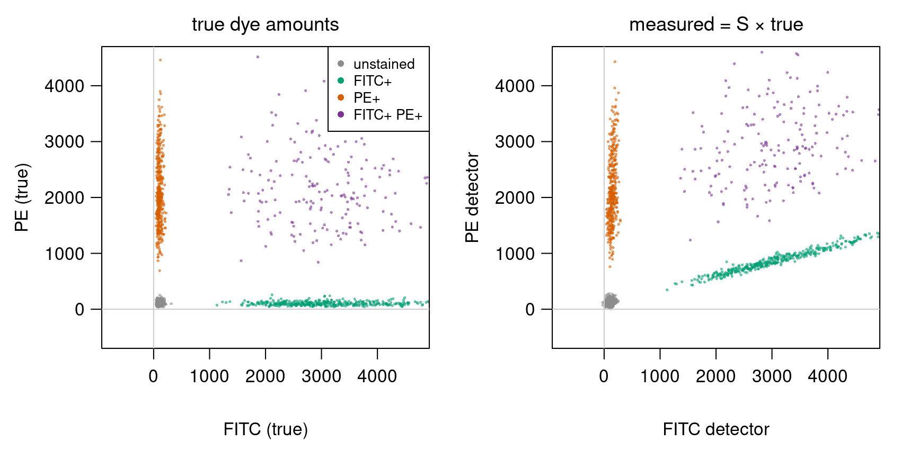
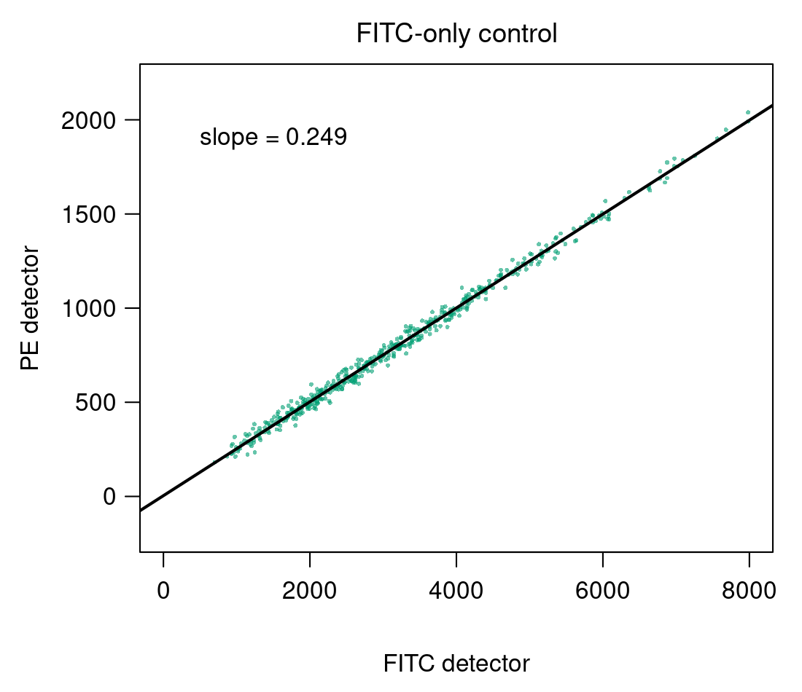
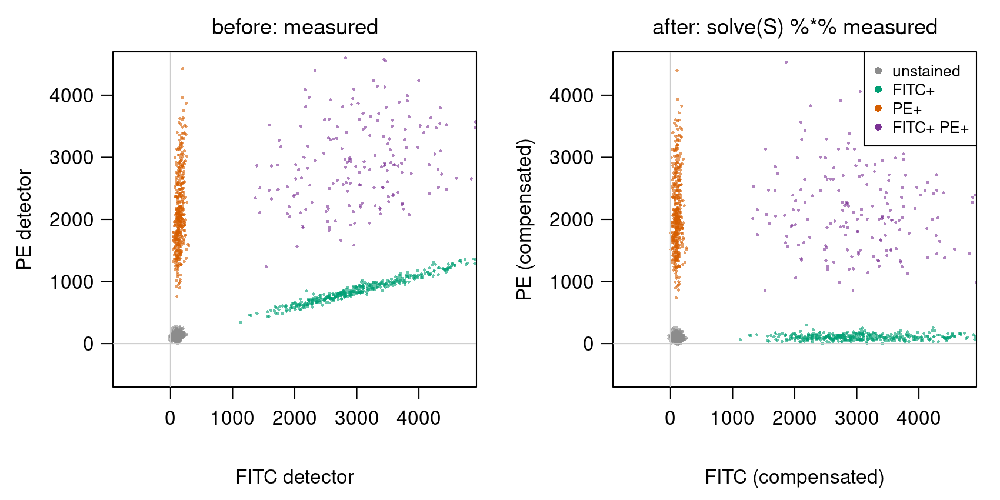
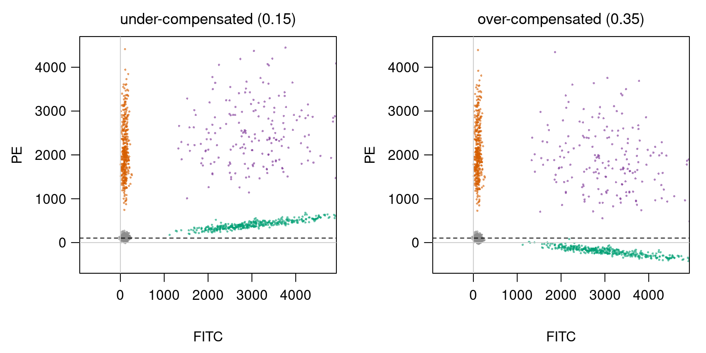
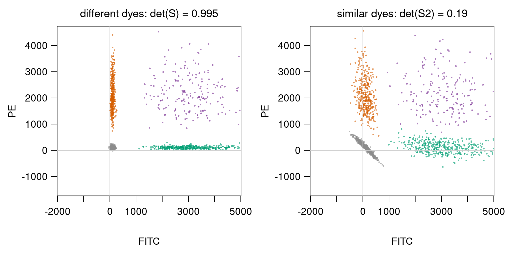

Exercise: compensation & spectral unmixing
Goal
By the end of this exercise you should be able to:
- write the spillover between fluorescent dyes as a \(2 \times 2\) matrix \(S\) and read its columns,
- estimate \(S\) from single-stained controls with
lm, - compensate (unmix) measurements with
solve, and invert a \(2 \times 2\) matrix by hand, - recognise under- and over-compensation in a plot,
- explain, with the determinant, why dyes with similar spectra are hard to separate.
This builds on Matrices as transformations (columns are where the axes land) and Transforming images with matrices (undoing a known matrix with solve).
Background
In a flow cytometer each detector collects one band of colours, but a dye’s light also reaches the other detectors (spillover). With two dyes, FITC and PE, and two detectors:
\[\begin{pmatrix} \text{FITC detector} \\ \text{PE detector} \end{pmatrix} = S \begin{pmatrix} \text{FITC} \\ \text{PE} \end{pmatrix}, \qquad S = \begin{pmatrix} 1 & s_{12} \\ s_{21} & 1 \end{pmatrix}\]
Column \(j\) of \(S\) is where one unit of dye \(j\)’s light lands: \(s_{21}\) is the fraction of FITC light seen by the PE detector, \(s_{12}\) the fraction of PE light seen by the FITC detector. Compensation recovers the dye amounts with the inverse: true \(= S^{-1}\) measured. For a \(2 \times 2\) matrix,
\[\begin{pmatrix} a & b \\ c & d \end{pmatrix}^{-1} = \frac{1}{ad - bc}\begin{pmatrix} d & -b \\ -c & a \end{pmatrix}.\]
The number \(ad - bc\) is the determinant \(\det S\): near 0 means the columns are nearly parallel and the inverse has large entries. Bonus material: you do not need to memorise determinants for the exam.
Spectral unmixing is the same equation, with \(S\) built from each dye’s measured reference spectrum (one column per dye, one row per detector).
By hand
Use \(S = \begin{pmatrix} 1 & 0.1 \\ 0.2 & 1 \end{pmatrix}\) in B1–B3.
B1. What do the detectors measure for a cell with (FITC, PE) \(= (2000, 0)\)? For \((0, 1000)\)? For \((2000, 1000)\)? Which column of \(S\) did you use for the first two?
B2. Compute \(\det S\) and \(S^{-1}\). Check that \(S^{-1}S = I\).
B3. A cell is measured as \((2100, 1400)\). Compensate it by hand: how much FITC and PE does it carry? Is it double positive?
B4. Two dyes with similar spectra give \(S_2 = \begin{pmatrix} 1 & 0.9 \\ 0.9 & 1 \end{pmatrix}\). Compute \(\det S_2\) and \(S_2^{-1}\). A cell measured as \((1000, 900)\) compensates to \((1000, 0)\). Now the PE detector reads 10 units too high, \((1000, 910)\): compensate again. How large is the error in each dye? Compare with the same 10-unit error under the \(S\) of B1–B3.
In R
All data are simulated: four populations of cells, with one cell per column (as the pixels in Transforming images with matrices).
set.seed(1)
make_pop <- function(n, fitc, pe) { # true dye amounts, one cell per COLUMN
rbind(FITC = rlnorm(n, log(fitc), 0.3), PE = rlnorm(n, log(pe), 0.3))
}
true <- cbind(make_pop(600, 100, 100), # unstained
make_pop(400, 3000, 100), # FITC+
make_pop(400, 100, 2000), # PE+
make_pop(200, 3000, 2000)) # FITC+ PE+
group <- rep(c("unstained", "FITC+", "PE+", "FITC+ PE+"), c(600, 400, 400, 200))
S <- matrix(c(1, 0.02, # rows = detectors, columns = dyes
0.25, 1 ), nrow = 2, byrow = TRUE,
dimnames = list(c("FITC det", "PE det"), c("FITC", "PE")))
noise <- function(n) matrix(rnorm(2 * n, 0, 30), nrow = 2) # detector noise
measured <- S %*% true + noise(ncol(true))
cols <- c("unstained" = "grey55", "FITC+" = "#009E73", "PE+" = "#D55E00", "FITC+ PE+" = "#7B3294")
plot(t(measured), col = cols[group], pch = 16, cex = 0.4, asp = 1)Run the tasks in order: each uses random numbers, so the numbers in the solutions match only if you do.
R1. Plot true and measured side by side, coloured by group. Which population moves most, and in which direction? Compute the median of each detector per population with apply(measured, 1, function(v) tapply(v, group, median)). How much PE signal does the FITC+ population seem to have?
R2. In practice \(S\) is unknown. Simulate two single-stained controls and estimate it:
ctrl_fitc <- S %*% rbind(FITC = rlnorm(500, log(3000), 0.5), PE = 0) + noise(500)
ctrl_pe <- S %*% rbind(FITC = 0, PE = rlnorm(500, log(2000), 0.5)) + noise(500)Use lm to estimate \(s_{21}\) (PE detector against FITC detector in the FITC-only control) and \(s_{12}\) (the other way round in the PE-only control). Build S_hat and compare it with S.
R3. Compensate with comp <- solve(S_hat) %*% measured. Plot before and after. Compute the population medians again: does the FITC+ population now have the same PE level as the unstained cells? Check that solve(S_hat) %*% S_hat is the identity.
R4. Compensate with a wrong spillover: \(s_{21} = 0.15\) (too small), then \(0.35\) (too large), keeping \(s_{12}\) from R2. Plot both. What does the FITC+ population look like in each case, and how could you spot the mistake in real data, where you do not know the truth?
R5. Similar dyes. Simulate with \(S_2 = \begin{pmatrix} 1 & 0.9 \\ 0.9 & 1 \end{pmatrix}\): measured2 <- S2 %*% true + noise(ncol(true)), compensate with solve(S2), and plot. Compare the standard deviation of the unstained cells in true, in comp (R3) and in comp2. Relate the result to det(S2) and to your answer in B4.
R6. Spectral unmixing with four detectors. Each dye’s reference spectrum is a column of the \(4 \times 2\) matrix
S4 <- cbind(FITC = c(1, 0.45, 0.10, 0.02),
PE = c(0.02, 0.30, 1, 0.40))
measured4 <- S4 %*% true + matrix(rnorm(4 * ncol(true), 0, 30), nrow = 4)Why does solve(S4) fail? Unmix all cells at once with qr.solve(S4, measured4) (least squares) and compare the population medians with the truth.
Hints
In the FITC-only control, every signal in the PE detector comes from FITC, so PE detector \(\approx s_{21} \times\) FITC detector. lm(ctrl_fitc[2, ] ~ ctrl_fitc[1, ]) fits that straight line; coef(...)[2] is the slope, i.e. \(s_{21}\). Row 1 of a detector matrix is the FITC detector, row 2 the PE detector.
Compare the PE level of the FITC+ cells with that of the unstained cells after compensation. If FITC carries no PE, the two should be the same, and the FITC+ population should lie flat (no tilt) however bright the FITC is.
solve() needs a square matrix: as many equations as unknowns. With 4 detectors and 2 dyes there are 4 equations for 2 unknowns per cell, and with noise they cannot all hold exactly. qr.solve(A, B) finds, for every column of B, the dye amounts whose predicted spectrum is closest to the measured one (least squares).
Solutions
B1. \(S\binom{2000}{0} = \binom{2000}{400}\) (column 1 times 2000), \(S\binom{0}{1000} = \binom{100}{1000}\) (column 2 times 1000), and \(S\binom{2000}{1000} = \binom{2000 + 100}{400 + 1000} = \binom{2100}{1400}\), the sum of the two.
B2. \(\det S = 1 \cdot 1 - 0.1 \cdot 0.2 = 0.98\) and \[S^{-1} = \frac{1}{0.98}\begin{pmatrix} 1 & -0.1 \\ -0.2 & 1 \end{pmatrix} \approx \begin{pmatrix} 1.020 & -0.102 \\ -0.204 & 1.020 \end{pmatrix}.\] Check, first entry: \(\frac{1}{0.98}(1 \cdot 1 + (-0.1)(0.2)) = \frac{0.98}{0.98} = 1\); the others work the same way.
B3. \(S^{-1}\binom{2100}{1400} = \frac{1}{0.98}\binom{2100 - 140}{-420 + 1400} = \frac{1}{0.98}\binom{1960}{980} = \binom{2000}{1000}\). The cell carries FITC 2000 and PE 1000: yes, double positive (it is the third cell of B1).
B4. \(\det S_2 = 1 - 0.81 = 0.19\), \(S_2^{-1} = \frac{1}{0.19}\begin{pmatrix} 1 & -0.9 \\ -0.9 & 1 \end{pmatrix} \approx \begin{pmatrix} 5.26 & -4.74 \\ -4.74 & 5.26 \end{pmatrix}\). \(S_2^{-1}\binom{1000}{910} = \frac{1}{0.19}\binom{1000 - 819}{-900 + 910} \approx \binom{953}{53}\). A 10-unit error in one detector became errors of about 47 and 53 in the dyes: the 10 is multiplied by the large entries of \(S_2^{-1}\). Under the \(S\) of B1–B3, \(S^{-1}\binom{0}{10} = \frac{1}{0.98}\binom{-1}{10} \approx \binom{-1}{10.2}\): the error stays about 10. Similar spectra mean nearly parallel columns, a small determinant, and a large inverse that amplifies noise.
R1.
par(mfrow = c(1, 2))
plot(t(true), col = cols[group], pch = 16, cex = 0.4, asp = 1, main = "true")
plot(t(measured), col = cols[group], pch = 16, cex = 0.4, asp = 1, main = "measured")
round(apply(measured, 1, function(v) tapply(v, group, median)))
# FITC det PE det
# FITC+ 3007 850
# FITC+ PE+ 3174 2901
# PE+ 142 2014
# unstained 104 127
The FITC+ population moves most: it is tilted upwards along the direction of column 1, \((1, 0.25)\), so the brighter a cell’s FITC, the more false PE it shows. It seems to have a median PE of 850, although its true PE is about 100, like unstained cells. The PE+ population barely moves (2 % spillover back). The double-positive cells move up too.
R2.
s21 <- coef(lm(ctrl_fitc[2, ] ~ ctrl_fitc[1, ]))[2]
s12 <- coef(lm(ctrl_pe[1, ] ~ ctrl_pe[2, ]))[2]
S_hat <- matrix(c(1, s12,
s21, 1 ), nrow = 2, byrow = TRUE)
round(S_hat, 3) # [1, 0.021; 0.249, 1]
The estimates, 0.249 and 0.021, are close to the true 0.25 and 0.02. They are not exact because of the detector noise in the controls.
R3.
comp <- solve(S_hat) %*% measured
par(mfrow = c(1, 2))
plot(t(measured), col = cols[group], pch = 16, cex = 0.4, asp = 1, main = "before")
plot(t(comp), col = cols[group], pch = 16, cex = 0.4, asp = 1, main = "after")
round(apply(comp, 1, function(v) tapply(v, group, median)))
# FITC PE
# FITC+ 3005 105
# FITC+ PE+ 3122 2063
# PE+ 97 1989
# unstained 102 103
round(solve(S_hat) %*% S_hat, 10) # the 2 x 2 identity
After compensation the FITC+ population lies flat, with a median PE of 105, the same as the unstained cells (103). All four populations are aligned with the axes again.
R4.
for (k in c(0.15, 0.35)) {
Sk <- matrix(c(1, s12,
k, 1 ), nrow = 2, byrow = TRUE)
ck <- solve(Sk) %*% measured
plot(t(ck), col = cols[group], pch = 16, cex = 0.4, asp = 1, main = paste("s21 =", k))
print(round(tapply(ck[2, ], group, median)))
}
With 0.15 (under-compensated) too little is subtracted: the FITC+ population still tilts up, with a median PE of 407. With 0.35 (over-compensated) too much is subtracted: it tilts down, to a median PE of −194, below the unstained cells (negative light is impossible). Without knowing the truth, the tell-tale sign is a tilt: a single-positive population should be flat, at the same PE level as the unstained cells, whatever its FITC brightness. A population that rises or falls along FITC means the spillover is wrong.
R5.
S2 <- matrix(c(1, 0.9,
0.9, 1 ), nrow = 2, byrow = TRUE)
measured2 <- S2 %*% true + noise(ncol(true))
comp2 <- solve(S2) %*% measured2
plot(t(comp2), col = cols[group], pch = 16, cex = 0.4, asp = 1)
sd_un <- function(m) round(apply(m[, group == "unstained"], 1, sd))
sd_un(true); sd_un(comp); sd_un(comp2) # 33 33; 45 45; 206 208
det(S2) # 0.19
The true spread of the unstained cells is 33; with well-separated dyes it is 45 after compensation (the detector noise of 30 adds to it). With similar dyes it is about 207: the populations smear out, and the unstained cells form a diagonal streak. The medians are still about right, but individual cells are not. As in B4, \(\det(S_2) = 0.19\) makes the inverse large (entries around 5), and the inverse multiplies the detector noise as well as the signal.
R6. solve(S4) fails because S4 is \(4 \times 2\), not square: it has no inverse.
unmixed <- qr.solve(S4, measured4) # 2 x 1600: one column per cell
round(apply(unmixed, 1, function(v) tapply(v, group, median)))
# FITC PE
# FITC+ 3009 100
# FITC+ PE+ 3113 2071
# PE+ 104 1996
# unstained 99 99The medians match the true populations (FITC about 3000 or 100, PE about 2000 or 100). Each cell’s four detector values are explained as well as possible by a mix of the two reference spectra. Using four detectors instead of two also averages out some of the noise.
Where this leads
- Linear systems: compensation is solving \(S\mathbf{x} = \mathbf{b}\) for every cell; a singular \(S\) (identical spectra) has no unique solution.
- Least squares and regression: R6 is the same least squares used to fit regression models later in the course; with many detectors, spectral cytometers unmix 20 or more dyes this way.
- Eigenvalues & eigenvectors: how much a matrix can stretch noise is measured more precisely by its eigenvalues (for symmetric \(S_2\): 1.9 and 0.1; the inverse stretches by \(1/0.1 = 10\)).
- Real data: the Bioconductor package flowCore reads cytometry files (
read.FCS), estimates spillover (spillover) and compensates (compensate);data(GvHD)is an example data set shipped with it.